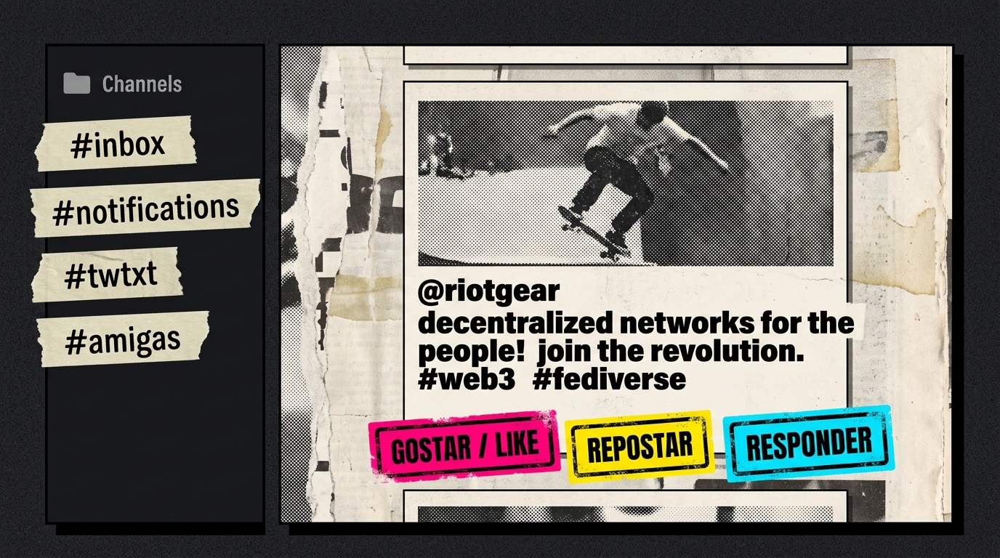
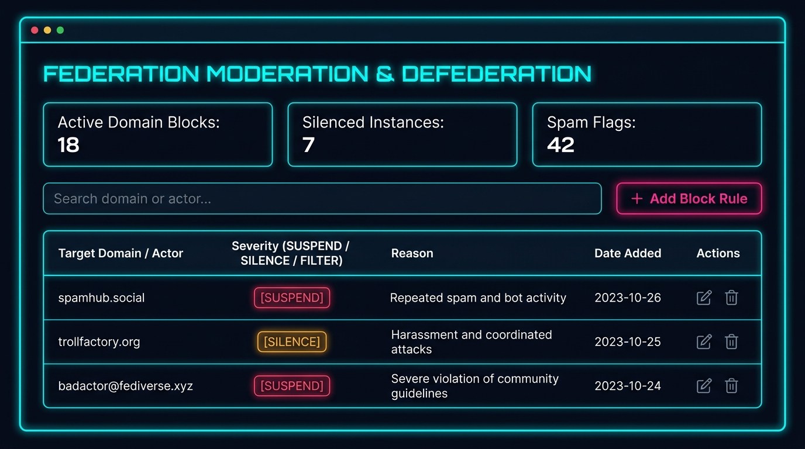
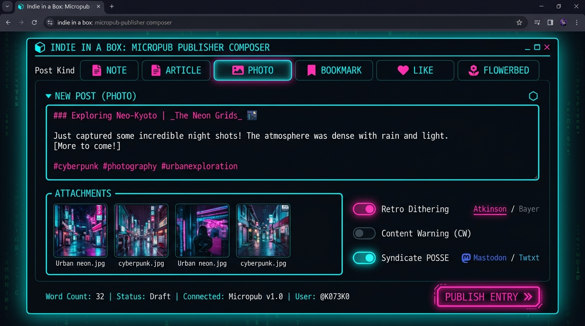
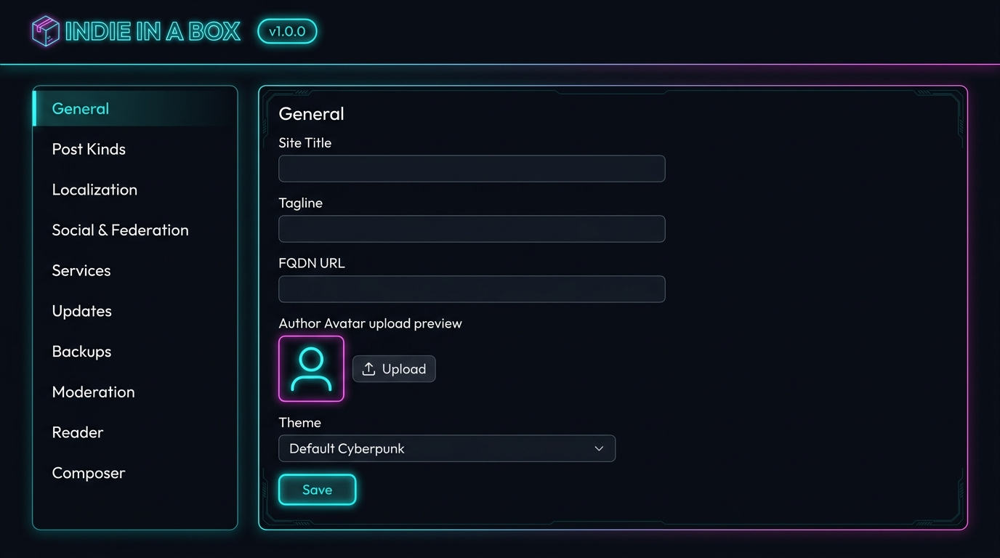
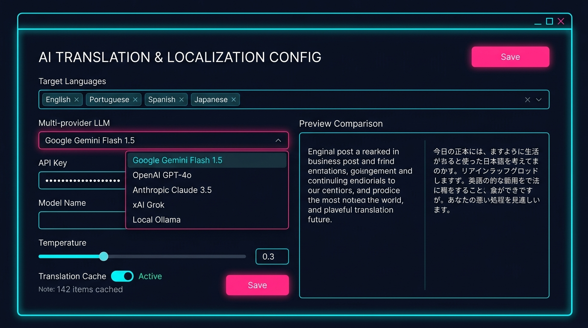

管理画面と UI リファレンス
Indie in a Box の管理パネルは、ストリート・ポスター（Lambe-Lambe）＆ DIY ネオ・ブルータリズムの生々しい美学で構築されています：カッター刃のような直線枠（border: 2px solid #000）、角丸の一切の排除、力強いスタンプ影（box-shadow: 4px 4px 0 #000）、マスキングテープタブ、シルクスクリーンの網点印刷（ホットマゼンタ #ff007f ＆ 警告イエロー #ffe600）。
01 // Module 01: Timeline (Microsub Reader)
Indie in a Box includes a full-featured, native Microsub Server & Web Client. You can subscribe to RSS, Atom, JSON, and Twtxt feeds, organize them into custom channels, read entries distraction-free, and interact with the decentralized web with single-click interactions.

| UI Component | Function | Specification / Standard |
|---|---|---|
| Channels Accordion | Sidebar channels list showing #inbox, #notifications, and custom thematic folders. Allows creating new channels and deleting existing ones. |
IndieWeb Microsub Spec (Channels Extension) |
| Feed Aggregator | Unified chronologically sorted feed ingesting external RSS 2.0, Atom, JSON Feed v1.1, and Twtxt text files. | Microformats2 h-entry parser |
| Inline Actions Bar | One-click action buttons below every item: Like (creates like-of), Repost (creates repost-of), Reply (opens Composer with in-reply-to), and Bookmark. |
W3C Micropub / IndieWeb Responses |
| + Subscribe Modal | Allows entering any URL or feed address. The engine performs automated rel-alternate feed discovery. | Microsub action=timeline&method=subscribe |
02 // Module 02: Federation Moderation & Defederation
Safeguard your instance from bad actors, spammers, harassment campaigns, and unwanted Fediverse traffic. The moderation panel provides surgical domain-level and actor-level isolation controls.

| Severity Action | Behavior & Protocol Impact | RFC / Protocol Standard |
|---|---|---|
| SUSPEND | Complete defederation. Inbound ActivityPub payloads and Webmentions from the target domain or actor are rejected immediately with HTTP 403 Forbidden. Outbound activities are never dispatched to this target. | ActivityPub Server-to-Server & RFC 9457 |
| SILENCE | Soft block. Incoming interactions and notifications are retained in the database for auditing purposes but are completely hidden from public timeline rendering and notification badges. | W3C ActivityStreams Moderation |
| FILTER | Automated keyword and spam pattern filtering. Items matching configured heuristics or regex patterns are routed to the spam quarantine queue for manual review. | Spam Prevention Pipeline |
| Audit Log & Reasons | Every defederation rule records author timestamp, administrative reason, and rule expiration date (or permanent). | Admin Audit Registry |
03 // Module 03: Publisher (Micropub Composer)
Compose, format, and publish multi-format content to the open web. The composer natively supports all IndieWeb post types, drag-and-drop media uploading with Camo-signed proxy support, live markdown rendering, and simultaneous cross-network syndication.

| Composer Field | Type / Allowed Values | Field Description |
|---|---|---|
| Post Kind Selector | Note, Article, Reply, Like, Bookmark, Photo, Listen, Watch, Read |
Sets the microformats2 vocabulary type (e.g. p-name for articles, e-content for notes, u-in-reply-to for replies). |
| Title (Article only) | Text string | Optional for short notes; required for long-form essays and garden articles. Generates URL slug automatically. |
| Content Editor | Markdown / Plaintext | Full GitHub Flavored Markdown support with code highlighting, hashtag autolinking (#hashtag), and Fediverse mention autolinking (@user@instance). |
| In-Reply-To / Like-Of URL | Canonical URL | Target URL being referenced. Indie in a Box automatically issues Webmentions and federated ActivityPub Create/Announce activities to this address. |
| Media Upload Zone | Drag & Drop images / audio | Uploaded assets are cryptographically hashed, optimized to web-friendly formats, and placed in public_media/ with responsive srcset generation. |
| Syndication Targets | Checkbox toggles | Cross-posts content to Mastodon, Bluesky, Twtxt, or archives permalink to the Internet Archive Wayback Machine. |
04 // Module 04: Configuration Tab 1 • General Settings
Primary site metadata, domain routing, author h-card identity, pretty URLs, and theme selection.

| Setting Field | Key in Database | Field Details & Defaults |
|---|---|---|
| Site Name / Title | sitename |
The title of your blog/instance. Renders in the header, RSS feed title, and ActivityPub Actor summary. Default: Indie In A Box. |
| Canonical FQDN URL | fqdn |
Root canonical domain name with scheme (e.g. https://indieinabox.2lp.in). Crucial for ActivityPub key discovery, Webfinger, and Webmention verification. |
| Author Name | author_name |
Display name of instance owner rendered in representative h-card markup. |
| Author Email | author_email |
Optional contact email for IndieAuth password resets and WebFinger mailto: aliases. |
| Pretty Links Toggle | prettylinks |
When enabled (default), outputs human-friendly URLs (/2026/my-post). When disabled, uses query parameter routing (/?p=142). |
| Active Theme Switcher | active_theme |
Selects installed theme directory (located in data/themes/). Built-in options include default, minimal, and cyber-dark. |
05 // Module 04: Configuration Tab 2 • Post Kinds & Garden
Configure how different content types are structured, URL slugs, and manage your Digital Garden taxonomy metrics:
Maturity Stages
Classify evolving garden notes into: sprout (early thought), seedling (growing draft), tree (evergreen reference), wilted (deprecated), or stone (immutable archival).
Confidence Levels
Indicate epistemic confidence: certain (fact-checked), likely (high certainty), possible (hypothesis), unlikely (skeptical), or impossible.
Importance Weights
Prioritize content across reader indices: trivial, minor, moderate, major, or critical.
06 // Module 04: Configuration Tab 3 • AI Translation & LLMs
Indie in a Box provides a first-of-its-kind automated AI translation pipeline for decentralized publishing. Translate your articles, notes, and digital garden entries into dozens of target languages using your choice of cutting-edge LLM providers.

| Configuration Field | Supported Values | Field Behavior |
|---|---|---|
| Target Languages | Multi-tag selector (en, pt, es, ja, fr, de, etc.) |
Whenever a post is published, the AI worker translates content into all selected target languages and stores localized variants in public_html/{lang}/. |
| Multi-Provider LLM |
Google Gemini Flash 1.5OpenAI GPT-4oAnthropic Claude 3.5 SonnetxAI Grok 2Local Ollama (Self-Hosted)
|
Selects the translation backend provider. For self-hosted setups requiring total privacy, Ollama runs completely offline on your local GPU/CPU. |
| API Key / Endpoint | Encrypted credential string | Masked input field stored securely in the database. For Ollama, specifies the local HTTP endpoint (e.g. http://127.0.0.1:11434). |
| Model Temperature | Slider: 0.0 to 1.0 (Default: 0.3) | Lower temperature (0.2–0.3) produces consistent, accurate translations faithful to the original tone while avoiding hallucinations. |
| Translation Cache | Toggle Switch (Active / Disabled) | Stores translated markdown snippets by content SHA-256 hash in SQLite table ai_translation_cache to avoid redundant API fees. |
| Global Strings Dictionary | Key-Value dictionary table | Overrides standard UI labels (e.g. "Recent posts", "Flowerbed", "Confidence", "Replies", "AI translation notice") for customized localized strings. |
08 // Module 04: Configuration Tab 5 • Services & Security
Hardened privacy services and web notification delivery:
Camo Media Proxy
Cryptographically signs external image URLs with HMAC-SHA1 to prevent mixed-content warnings and protect reader IP addresses from third-party tracking.
Web Push (VAPID)
Browser push notification pipeline. Generate VAPID key pairs with one click to receive instant device notifications when followers reply or mention you.
Wayback Syndication
Automatically dispatches archive pings to the Internet Archive Wayback Machine upon publishing, guaranteeing permanent digital preservation.
09 // Module 04: Configuration Tab 6 • In-Place Updates
Seamless single-file engine upgrades. Check for new releases directly from Codeberg, inspect release changelogs, perform atomic in-place updates, and keep automated rollback backups with instant recovery buttons.
| Update Control | Function | Safety Guarantees |
|---|---|---|
| Release Channel | Switch between Stable (recommended) and Nightly (bleeding-edge builds). |
Validates channel signature feeds. |
| Check Releases Button | Queries Codeberg Releases API and compares against local VERSION. |
Zero file system alterations. |
| Apply Update Button | Downloads new indieinabox.php binary, checks SHA-256 hash, and atomically swaps binary. |
Automatic pre-update snapshot saved to data/backups/. |
| Rollback Archive Selector | Reverts instance to any previous saved binary snapshot. | Restores in less than 100 milliseconds. |
10 // Module 04: Configuration Tab 7 • Backups & Portability
Complete data sovereignty. Export and import entire site snapshots with full cryptographic integrity verification.
| Action | Artifact Produced | Features |
|---|---|---|
| One-Click Backup / Export | .zip or .tar.gz archive |
Packages SQLite database (WAL committed), markdown posts, media files, and a manifest.json containing SHA-256 hashes for every file. |
| Bundle Restore / Import | Uploaded archive file | Verifies SHA-256 manifest integrity, generates a safety snapshot of current instance, uncompresses files, and triggers full static rebuild. |